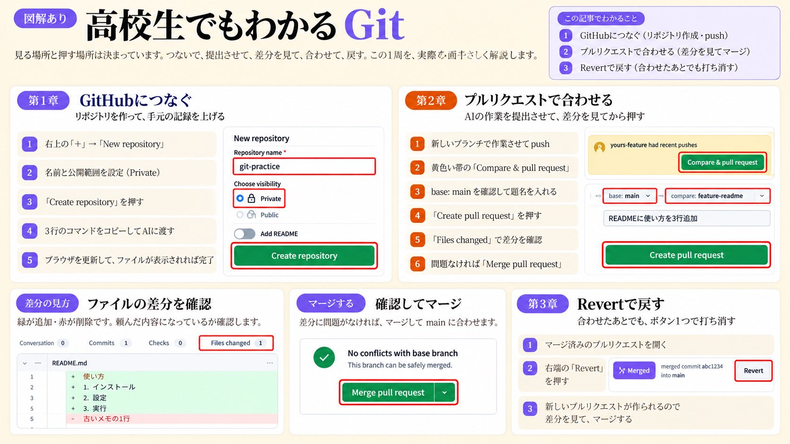

Git の1周
つなぐ → 提出させる → 差分を見る → 合わせる → 戻す
このリポジトリは AI（Claude など）にブランチで作業させ、プルリクエスト（PR）で差分を見てから main に入れる運用です。 見る場所と押すボタンは毎回同じ。この1周を覚えれば、AI の変更を安全に受け取れます。
第1章 GitHubにつなぐ
第2章 PRで合わせる
第3章 Revertで戻す
図解（1枚まとめ）


手順
1
GitHubにつなぐ
リポジトリを作って、手元の記録を上げる- 右上の 「+」→「New repository」
- 名前と公開範囲を設定（迷ったら Private）
- 「Create repository」を押す
- 表示される3行のコマンド（
git remote add〜git push）をコピーして AI に渡す - ブラウザを更新して、ファイルが表示されれば完了
2
プルリクエストで合わせる
AIの作業を提出させて、差分を見てから押す- AI に新しいブランチで作業させて push させる（main に直接 push させない）
- 黄色い帯の 「Compare & pull request」
base: main←compare: 作業ブランチになっているか確認し、題名を入れる- 「Create pull request」
- 「Files changed」で差分を確認（緑＝追加、赤＝削除）。頼んだ内容になっているか、頼んでいない変更が混ざっていないかを見る
- 「No conflicts with base branch」かつ CI が緑なら 「Merge pull request」
このリポジトリでは
マージ前に CI（
check-site.yml / check-data.yml）が緑であることを確認する。赤のままマージしない。
また data/records.json を書き換える PR と、index.html の生成領域（// ===== DATA ===== ブロックなど）を手で直す PR はマージしない（前者は sr-record.py だけが書く、後者は翌朝の自動更新で戻る）。
3
Revertで戻す
合わせたあとでも打ち消せる- マージ済みのプルリクエストを開く
- 右端の 「Revert」を押す
- 打ち消し用の新しいプルリクエストが作られるので、差分を見てマージする
注意
「ボタン1つ」で戻るわけではない。Revert は逆向きの変更を新しい PR として作るだけで、マージするまで main は戻らない。
また、マージ後に同じ行が別のコミット（毎朝の自動更新など）で書き換わっていると、ボタンが自動 Revert できずに失敗する。その場合は AI に「PR #番号 を revert する PR を作って」と頼む。
覚え方
ブランチ＝下書き用の別ノート、PR＝「この下書きを清書に写していいですか」という申請、マージ＝写す、Revert＝「写した内容を打ち消す」新しい申請。
履歴は消えない。消すのではなく、打ち消しを積む——だから何度でもやり直せる。